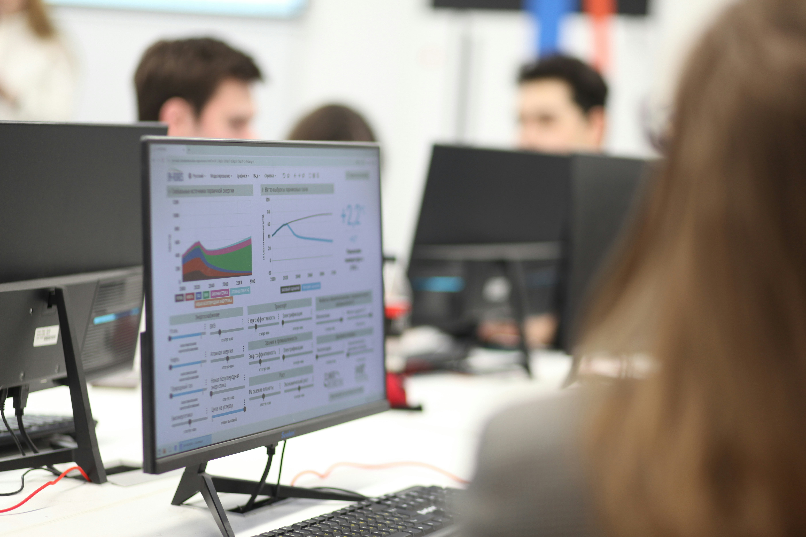

My Projects
These are planned projects that reflect my research interests in artificial intelligence, simulation, edge computing, and research methodology.
1. Kenya Education Management Information System(KEMIS)
This project will help schools manage learner records, attendance, and
basic academic information in one place.
The goal is to reduce manual paperwork and make it easier for teachers
and administrators to access important information quickly.
2. E-learning Support Platform

This platform will provide learners with access to learning materials,
simple quizzes, and teacher support.
It is designed especially for learners who may not always have access
to physical learning resources, helping to make learning more flexible
and inclusive.
3. Data analytics Dashboard for Students

This project will create a simple web dashboard to help Education
stakeholders plan, coordinate, and report on student data for
decision-making purposes.
It will provide tools for documenting and recording all education data
and project timelines.
Project Summary
| Project | Main Focus | Expected Outcome |
|---|---|---|
| Kenya Education Management Information System (KEMIS) | Education data management and analysis | A comprehensive system for tracking and reporting educational metrics in Kenya |
| E-Learning Support Platforms | Provide online learning materials and support | Improved accessibility and inclusivity of learning opportunities |
| Data analytics Dashboard for Students | Data analysis and reporting | A web-based tool for planning and documenting student research |
For more information about my background, visit the about page. To discuss a possible collaboration, use the contact page.